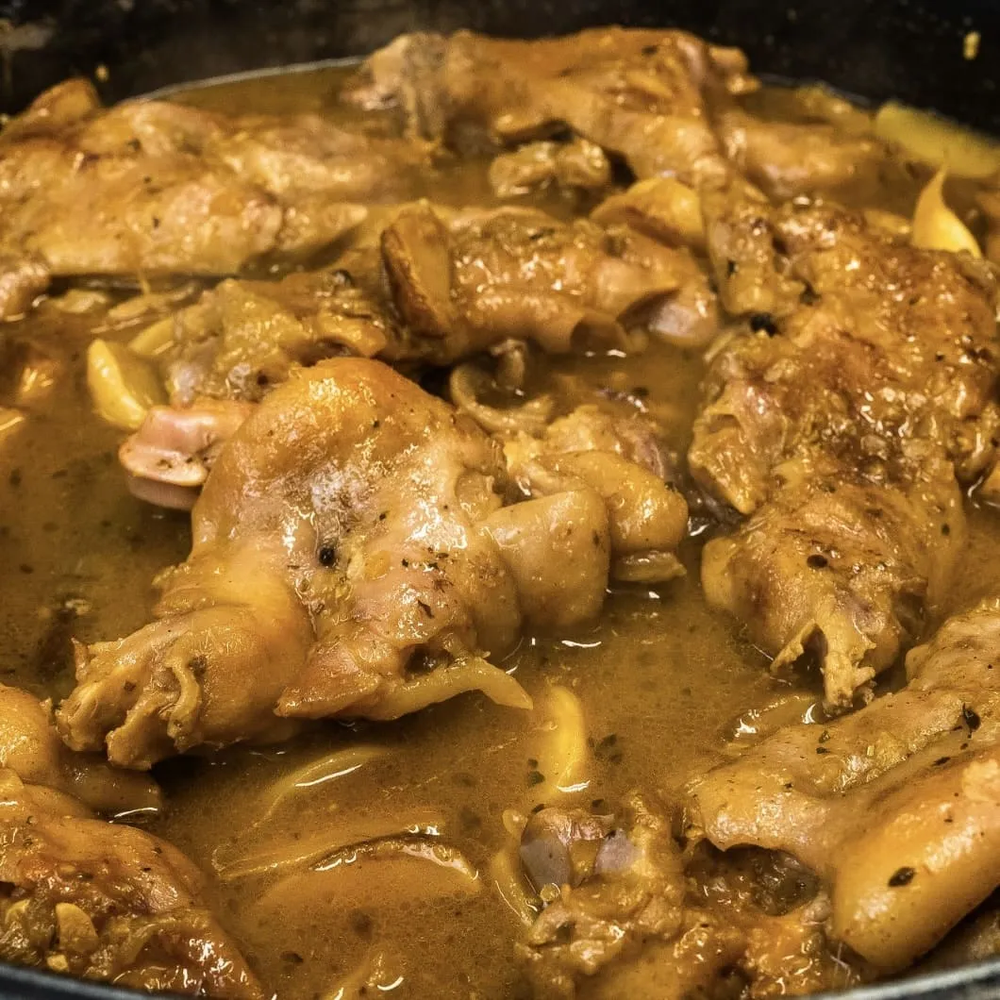

⏲ 25 minuts 👥 4 racions

Avui us portem una recepta d’aquelles ben tradicionals, però que no us ha de fer por perquè són uns
peus de porc amb nap negre no tenen cap complicació. Simplement coem els naps negres, fem el
sofregit i bullim una mica els peus ja precuits, obtindrem un resultat espectacular!
Ingredients:
- 8 mitjos peus de porc precuits
- 2L de brou de pollastre
- 500g de naps negres
- 2 cebes
- 2 tomàquets madurs
- 3 grans d'all
- Vi ranci
- Herbes mediterrànies
- Un tronc de canyella
- Mantega
- Oli, sal i pebre
- En una paella amb força mantega, sofregim un all picat i els naps negres pelats i tallats a grills. Els deixem fregir lentament fins que trenquin el color. Cobrim amb brou de pollastre i els deixem coure fent xup-xup durant 20 min, i reservem.
- Afegim 2 alls i 2 cebes picats en una cassola amb un raig d’oli. Deixem enrossir durant uns 20 minuts a foc mitjà baix, i després afegim els tomàquets madurs ratllats. Quan s’hagi assecat, aixequem sucres amb un raig de vi ranci i coem una culleradeta de farina.
- Afegim el nap amb la seva salsa, els trossos de peu de porc i acabem de cobrir amb brou de pollastre. Afegim grans de pebre, un parell de fulles de llorer, i ho integrem tot. Deixem fer xup-xup durant uns minuts, que redueixi una mica el brou i que els peus agafin el punt que a nosaltres ens agradi.